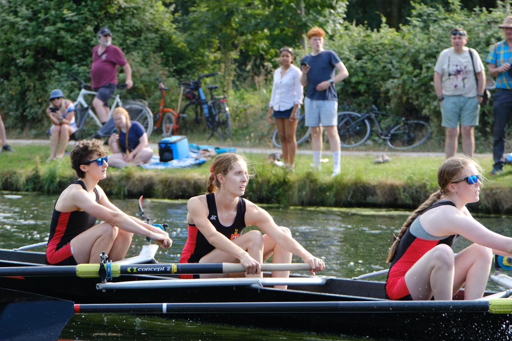
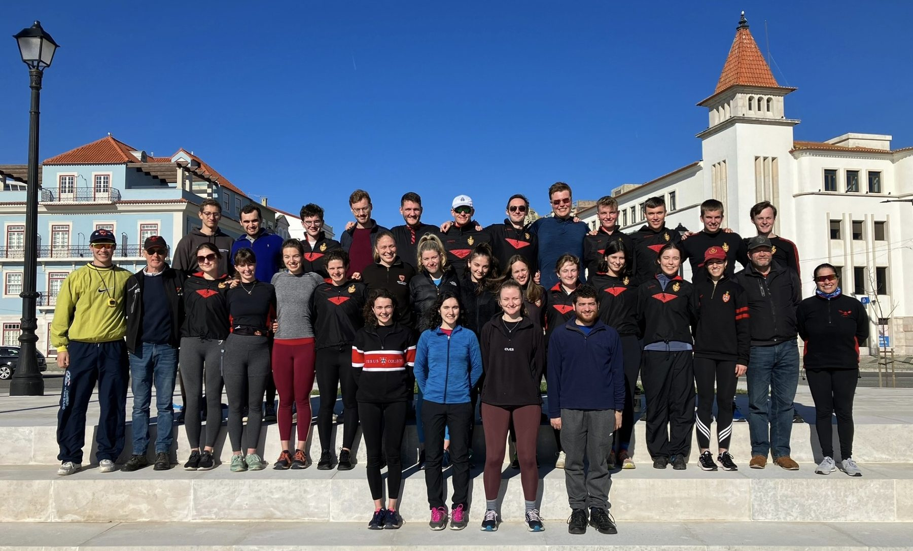

Beginners
Novice Programme
Most of us had never rowed before joining. You'll learn the basics with our coaches and Lower Boats Captains, then race with your crew by the end of your first term.
Learn to row →Most of us learnt to row here. Others arrived with years of racing behind them. Whatever your experience, come and row with us, with coaching for every crew and a boathouse just five minutes from College.

Most of our members learn to row in their first term through our novice programme, then move into senior crews. If you've rowed before, you can join the seniors straight away. Several Jesus rowers trial for the University each year, with financial support from College.
There's plenty going on off the water too: bar nights, crew pastas and a black-tie boat club dinner at the end of each term.
Our boathouse is a five-minute cycle from College accommodation, with over 30 boats and a Level-4 head coach. Generations of Jesus crews have trained here, helping make JCBC the most successful college boat club in Cambridge.
You can learn from scratch or join our senior squads. Here's where to start.
Most of us had never rowed before joining. You'll learn the basics with our coaches and Lower Boats Captains, then race with your crew by the end of your first term.
Learn to row →If you've rowed before, get in touch with a captain about joining our senior crews. We also support rowers who want to trial for CUBC.
Talk to a captain →
A lot of our time together is spent out of the boat, at crew pastas, bar nights and boat club dinners. There's also a heavily subsidised training camp in Spain each January.
We've organised the Fairbairn Cup since Steve Fairbairn founded it in 1929. College crews from Cambridge, Oxford and Durham, along with their alumni, race down the Cam at the end of Michaelmas term. The 2026 races also mark the start of our bicentenary celebrations.
A 1930s boathouse beside Goldie, refurbished in 2013, with over 30 boats, an ergo room, workshop and full changing facilities.
Boats, from training tubs and sculls to Filippi eights.
Full-time qualified coaches, led by a Level-4 British Rowing head coach.
By bike from College accommodation to the boathouse.
If you're a Jesus student, or will be joining us soon, you can sign up now. You don't need any rowing experience.